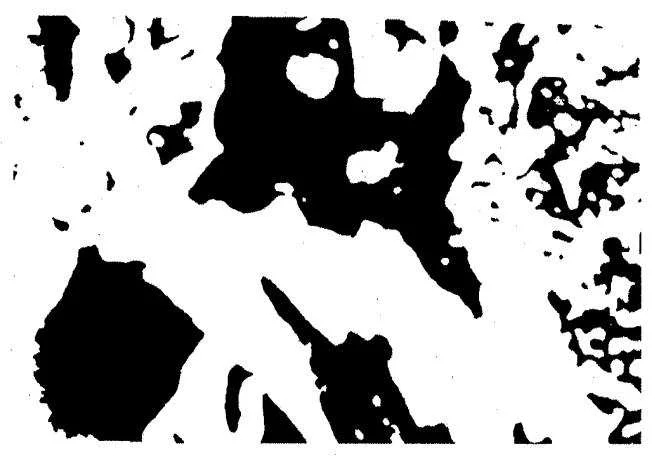
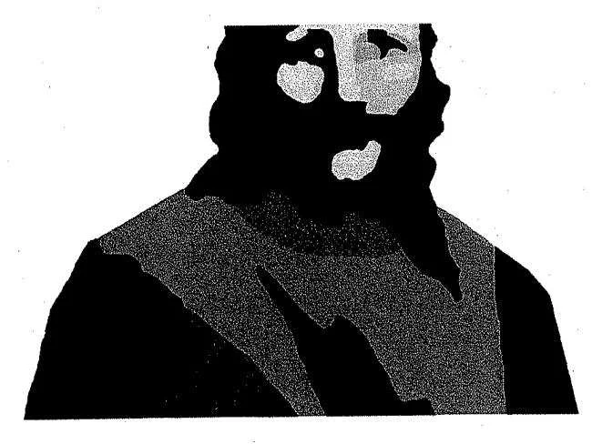
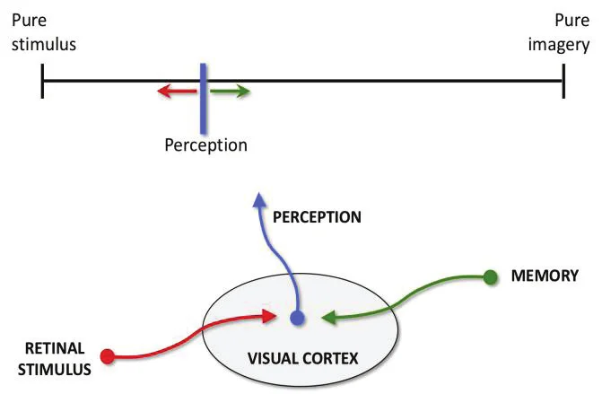

Jusqu'à ce que je connaisse cette sûre incertitude, j'accueillerai l'illusion qui m'est offerte. William Shakespeare, La Comédie des erreursOriginal anglais : Until I know this sure uncertainty, I’ll entertain the offered fallacy.
Une nette majorité de la population américaine croit aujourd'hui à l'existence d'une vie extraterrestre. Malgré la force et l'omniprésence de cette croyance, les preuves scientifiques directes qui l'étayent sont limitées. La raison principale de ce soutien limité est que les preuves se présentent surtout sous la forme de comptes rendus de témoins oculaires. La compréhension scientifique moderne de la sensation, de la perception et de la mémoire humaines a mis au jour une foule de facteurs qui compromettent couramment la validité des témoignages oculaires dans des conditions d'incertitude. Prenant acte de cela, le système de justice pénale américain a mis en œuvre de nouvelles réformes fondées sur la science pour réduire le risque d'erreur d'identification dans les enquêtes et les poursuites pénales. Cette approche constitue un modèle pour réformer le jugement populiste, très peu encadré, des témoignages oculaires de vie extraterrestre, une réforme qui pourrait apporter des preuves crédibles sur un sujet de grande importance en matière de sûreté, de sécurité et de science.
Un sondage récent a révélé que 65 % de la population américaine est prête à parier sur l'existence d'une vie extraterrestre Kennedy, C. and M. Lau: “Pew Research Center Survey,” . Étant donné que nous avons peu de faits à notre disposition (ce n'est pas comme spéculer sur la météo, ou sur le boxeur qui gagnera le combat), et que cette croyance majoritaire est capable d'orienter les politiques dans une société démocratique, on ne peut s'empêcher de se demander d'où vient cette certitude.
D'une manière générale, il existe deux types d'explication, la foi et la preuve, sur lesquels je reviens plus loin. Auparavant, je voudrais dire en quelques mots pourquoi, en tant que scientifique de laboratoire rompu à l'étude empirique de la perception, de la cognition et du comportement, j'ai choisi d'écrire sur le témoignage humain d'expériences personnelles avec de prétendus extraterrestres. Je n'ai aucune expérience de la vie extraterrestre, mais j'ai une expérience considérable de la compréhension de la validité des comptes rendus perceptifs humains. Cette validité reflète les limites que nous imposent notre nature biologique, nos priorités cognitives et comportementales, et les propriétés physiques du monde que nous habitons, qui déterminent ensemble notre capacité à détecter, discriminer, interpréter, mémoriser, juger et rapporter avec exactitude l'information qui nous parvient par nos sens. Je reconnais que ces restrictions, notre biologie et notre monde physique, peuvent sembler limitatives dans ce contexte, car on a parfois dit que les expériences en question échappaient au domaine de la connaissance humaine Hopkins, B.: Missing Time, New York: Putnam, . Tenant compte de cette possibilité insoluble, je garde l'esprit ouvert.
Dans les sections qui suivent, je passe brièvement en revue les contributions de la foi et de la preuve aux croyances en une vie extraterrestre. Suit un examen des preuves testimoniales oculaires de l'apparence et des actions de prétendues formes de vie extraterrestres, ainsi que des témoignages oculaires de lumières et de sons inhabituels, tels que ceux qu'on attribue à des moyens de transport extraterrestres. Comme je l'ai déjà fait pour les témoignages oculaires du type couramment utilisé dans les enquêtes et les poursuites pénales Albright, T.D.: “Why Eyewitnesses Fail,” Proceedings of the National Academy of Sciences, 114(30), pp. 7758-7764, , je conclus en abordant les multiples facteurs qui peuvent amener des observateurs honnêtes et bien intentionnés à faire des déclarations inexactes sur leurs expériences sensorielles.
Beaucoup de ceux qui croient à la vie extraterrestre le font par foi, ne serait-ce que parce qu'ils ont peu de preuves à leur disposition Swami, V., A. Furnham, T. Haubner, S. Stieger and M. Voracek: “The Truth is Out There: The Structure of Beliefs about Extraterrestrial Life Among Austrian and British Respondents,” The Journal of Social Psychology, 149(1), pp. 29–43, . Par un processus implicite de psychologie populaire et de raisonnement en chambre, joint au fait que se tromper est jusqu'ici sans conséquence, il semble tout simplement raisonnable, et peut-être excitant, de supposer que nous ne sommes pas seuls dans l'univers. Il y a aussi l'argument statistique : nier la vie extraterrestre reviendrait à présumer que nous sommes inexplicablement uniques dans un vaste univers de matière, un trou en un au milieu d'un ouragan.L'unicité de la vie sur Terre est une croyance chrétienne répandue, ce qui pourrait expliquer que les personnes de foi religieuse forte, comme les protestants évangéliques, soient moins enclines à croire à la vie extraterrestre [B. Alper B and J. Alvardo (2021) Pew Research Center Survey, https://www.pewresearch.org/fact-tank/2021/07/28/religious-americans-less-likely-to-believe-intelligent-life-exists-on-other-planets/]. Voir aussi J.D. Sarfati (2004) “Bible Leaves no Room for Extraterrestrial Life,” Science and Theology News, 4(7), 3-7 ; C.E. Sagan (1973) The Cosmic Question: An Extraterrestrial Perspective, 2e édition. Cambridge, Massachusetts : Cambridge University Press.[Note de RR0] Le livre de Carl Sagan de s'intitule The Cosmic Connection: An Extraterrestrial Perspective (Anchor Press/Doubleday) ; sa deuxième édition a été publiée en par Cambridge University Press, à Cambridge (Royaume-Uni). Cette croyance extraterrestre est renforcée par un énorme corpus de littérature fantastique et de divertissements multimédias, des mythologies antiques aux histoires de super-héros modernes et aux sagas stellaires de science-fiction, qui ont tous promu un pluralisme cosmique. Bien qu'explicitement fictionnelles, ces œuvres facilitent, par une forme de thérapie d'exposition, l'acceptation de créatures différentes de nous, venues de royaumes célestes ou de galaxies lointaines, très lointaines. De véritables preuves factuelles à l'appui de l'hypothèse extraterrestre seraient aussi précieuses et sans aucun doute intéressantes, mais elles ne sont pas nécessaires si la conviction est ancrée dans la foi.
Il existe des similitudes bien connues entre la foi en l'existence d'une vie extraterrestre et la foi religieuse traditionnelle, qui sont éclairantes parce qu'elles révèlent certaines caractéristiques communes des systèmes de croyance humains, et qu'elles nous rappellent que pour certains, croire à une vie extraterrestre n'est pas plus surprenant que, par exemple, croire à la naissance virginale et à la résurrection de Jésus Lewis, J.R.: The Gods Have Landed: New Religions from Other Worlds, Albany, New York: SUNY Press, . La doctrine chrétienne moderne appelée créationnisme en offre une illustration frappante. Le créationnisme soutient que la profonde richesse et diversité, la beauté, l'exquise fonctionnalité et l'harmonie de la vie sur notre planète n'ont pu naître que de créations délibérées d'une puissance divine. Selon cette doctrine, les explications alternatives, comme l'évolution par sélection naturelle, souffrent d'une complexité, d'un bruit et d'une incomplétude inhérents, et d'une absence de mouvement dirigé vers un monde centré sur l'humain. En l'absence de preuves, et sans les garde-fous de la science et du raisonnement critique, nous nous rabattons par défaut sur des explications simplificatrices approuvées par des guides de croyance autoproclamés. Peu importe que le canon créationniste exige d'accepter des choses que nous ne pouvons pas confirmer. Comme pour la croyance à la vie extraterrestre, cette acceptation est facilitée par une abondante littérature mythique et par une communauté missionnaire qui prend la forme d'une religion organisée. Dans ce monde, la foi seule prévaut, ne serait-ce que parce qu'elle satisfait un besoin d'explication.
Une certitude fondée sur des preuves de l'existence d'une vie extraterrestre est naturellement plus difficile à obtenir, et toujours exposée à l'exagération et à la déformation par des biais nés de la foi. Les preuves qui existent actuellement se répartissent en deux grandes catégories : indirectes et directes.
La forme indirecte de preuve de la vie extraterrestre, sans doute la plus solide en termes de rigueur empirique, consiste à démontrer qu'il existe des environnements extraterrestres réunissant des conditions qui pourraient abriter la vie telle que nous la connaissons. L'existence de planètes semblables à la Terre, des planètes aux conditions atmosphériques et terrestres comparables à celles qui ont fait naître la vie sur Terre, en d'autres endroits de l'univers mesurable, a longtemps paru une possibilité convaincante, qui a conduit à l'émergence du domaine scientifique de l'astrobiologie. Le télescope spatial Kepler, en service de , a permis d'identifier des milliers de planètes extrasolaires, les « exoplanètes », grâce à la technique séculaire de la détection des transits astronomiques.Les planètes lointaines sont difficiles à détecter sur le fond obscur de l'univers, mais leur existence et leurs propriétés orbitales peuvent être déduites de baisses mesurables de luminosité lorsqu'elles « transitent » devant une étoile. Johannes Kepler a prédit, au XVIe siècle, les transits solaires de Mercure et de Vénus qui furent observés au télescope au XVIIe siècle.[Note de RR0] Kepler a publié cette prédiction en , donc au XVIIe siècle, pour des transits survenus en . Le même principe, avec des fonctions spectrographiques en plus, a été employé par le programme du télescope spatial Kepler pour identifier et étudier des exoplanètes. Un sous-ensemble de ces exoplanètes a été jugé semblable à la Terre quant à son aptitude à la vie, selon des critères tels que la taille, l'orbite et la température “Habitable Exoplanets Catalog,” Planetary Habitability Laboratory, University of Puerto Rico at Arecibo Lammer, H., J.H. Bredehöft, A. Coustenis, M.L. Khodachenko, L. Kaltenegger, O. Grasset, D. Prieur, F. Raulin, P. Ehrenfreund, M. Yamauchi, and J.E. Wahlund: “What Makes a Planet Habitable?” The Astronomy and Astrophysics Review, 17(2), pp. 181-249, . Un sous-ensemble plus restreint encore, mais très intrigant, comprend les exoplanètes habitables d'où l'on aurait pu voir la Terre transiter devant le Soleil Kaltenegger, L. and J.K. Faherty: “Past, Present and Future Stars that Can See Earth as a Transiting Exoplanet,” Nature, 594, pp. 505–507, . Il ne s'agit pas simplement d'exoplanètes habitables que nous pouvons détecter, mais de celles d'où des formes de vie extraterrestres auraient la possibilité de nous détecter.
Ces travaux sur les exoplanètes habitables sont complétés par des découvertes récentes et par la recherche en cours d'éléments chimiques de la vie sur d'autres planètes et lunes de notre propre système solaire, comme l'illustrent les explorations géochimiques au sol de Mars Rampe, E.B., D.F. Blake, T.F. Bristow, D.W. Ming, D.T. Vaniman, R.V. Morris, C.N. Achilles, S.J. Chipera, S.M. Morrison, V.M. Tu, and A.S. Yen: “Mineralogy and Geochemistry of Sedimentary Rocks and Eolian Sediments in Gale Crater, Mars: A Review After Six Earth Years of Exploration with Curiosity,” Geochemistry, 80(2), pp. 125605, et l'analyse spectroscopique du rayonnement électromagnétique de corps planétaires lointains Angel, S.M., N.R. Gomer, S.K. Sharma, and C. McKay: “Remote Raman Spectroscopy for Planetary Exploration: A Review,” Applied Spectroscopy. 66(2), pp. 137-150, . Il est à noter que ces démonstrations du potentiel de vie extraterrestre sont toutes le produit de recherches systématiques menées par notre entreprise scientifique dominante. Le potentiel de vie n'a bien sûr qu'un rapport probabiliste avec la vie réelle, mais ces résultats reposent sur un fondement empirique solide, qui renforce la croyance que nous ne sommes pas seuls.
Bien qu'elle manque largement du sérieux scientifique des formes indirectes de preuve empirique de la vie extraterrestre, ne serait-ce que parce qu'elle repose sur l'analyse d'événements rares, inattendus et brefs, la preuve directe est de loin le type de soutien le plus provocant. Il est utile de distinguer deux catégories générales de preuves directes : (i) les signaux qui pourraient indiquer des communications à distance de civilisations extraterrestres, et (ii) les observations en temps réel d'êtres animés et d'engins proches, dont on déduit qu'ils sont d'origine extraterrestre.
Notre univers regorge d'objets visuellement détectables et d'autres phénomènes électromagnétiques, dont les propriétés s'expliquent pour la plupart comme des produits de forces naturelles connues. Sur cette toile de fond prévisible, une forme convaincante de preuve directe de la vie extraterrestre consiste en des signaux visuels ou radiofréquences statistiquement improbables, qui pourraient être interprétés comme des communications dirigées, ou des technosignatures, les épaves et débris de civilisations extraterrestres NASA and the Search for Technosignatures: A Report from the NASA Technosignatures Workshop, . La recherche de longue date d'intelligence extraterrestre (SETI), rendue possible par une science à financement public et privé qui emploie de grands réseaux de radiotélescopes, est conçue pour scruter le ciel à la recherche de signaux pouvant provenir de sources de vie extraterrestre. De rares et brèves bouffées d'activité dans des bandes radiofréquences étroites, les sursauts radio rapides, suscitent l'intérêt et encouragent la croyance parce que les explications naturelles sont limitées Price, D.: “Breakthrough Listen Is Scanning More of Space Than Ever to Try to Find Intelligent Life,” IEEE Spectrum, 58(2), pp. 34-39, . Mais cette pratique d'investigation, si sophistiquée soit-elle sur les plans technique et conceptuel, ne nous a pas encore menés à des civilisations extraterrestres.
Les objets anormaux observés au télescope suscitent un intérêt similaire. En , par exemple, un objet suivant une étrange trajectoire interstellaire a été découvert, culbutant à travers notre système solaire. Baptisé plus tard Oumuamua (éclaireur), plusieurs propriétés inhabituelles de l'objet (un déplacement sur une trajectoire inattendue avec ce qui semblait être une accélération non gravitationnelle, des propriétés de surface et une réflectance différentes de celles d'une comète, et une forme de cigare) ont conduit des astrophysiciens éminents à spéculer qu'il pourrait être d'origine extraterrestre Loeb, A.: “On the Possibility of an Artificial Origin for `Oumuamua,” . L'objet a poursuivi sa route sans incident vers le cosmos lointain, et beaucoup soutiennent aujourd'hui qu'il s'agit d'un objet naturel, bien qu'improbable Desch, S.J., and A.P. Jackson: “1I/`Oumuamua as an N2 Ice Fragment of an Exo Pluto Surface II: Generation of N2 Ice Fragments and the Origin of `Oumuamua,” Journal of Geophysical Research (Planets) 126(5) e2020JE006807, [Note de RR0] Le DOI imprimé dans le livre, 10.1029/2020JE006706, est celui de la partie I de cette étude (Jackson et Desch) ; l'article cité ici, e2020JE006807, est à https://doi.org/10.1029/2020JE006807..
La forme la plus controversée de preuve directe de la vie extraterrestre, celle sur laquelle je me concentrerai
dans la suite de cet essai, est constituée par les témoignages oculaires humains de rencontres directes avec des
extraterrestres et des phénomènes sensoriels associés. Dans un effort pour systématiser une nouvelle science
fondée sur de tels témoignages, l'astronome J. Allen
Hynek a élaboré au début des années une utile taxonomie des rencontres
extraterrestres .
Deux sous-catégories de ce que Hynek appelait « rencontres rapprochées » nous intéressent ici. Les rencontres rapprochées du premier
type désignent les rapports d'observation d'ovnis [objets volants non identifiés] qui font état d'objets
ou de lumières très brillantes proches des observateurs.
Les rencontres rapprochées du troisième
typeÉgalement titre, on le sait, d'un film acclamé par la critique en sur une telle rencontre, réalisé par Steven
Spielberg avec Richard Dreyfuss. désignent les rencontres
dans lesquelles la présence de créatures animées est rapportée.
Les rencontres rapprochées du premier et
du troisième type sont donc attestées par des témoignages oculaires. Les rencontres rapprochées du deuxième
type désignent d'autres manifestations physiques des ovnis ou des entités animées observés, comme une
végétation endommagée, qui présentent un intérêt en tant que confirmation indépendante (ou absence de
confirmation) des témoignages oculaires.
La plus grande catégorie de rencontres rapprochées concerne les ovnis, rendus visibles (nous le présumons) par de la lumière
réfléchie ou émise, ou par l'occultation d'autres objets visibles. Pendant une grande partie du
XXe siècle, beaucoup de ces rencontres ont d'abord été popularisées sous forme de récits anecdotiques
d'aviateurs, qui décrivaient des événements tels que : a failli entrer en collision avec un
ovni
“Chiles-Whitted UFO Encounter
1948,” Ancientalienpedia, schémas de vol très inhabituels
“Milton Torres 1957 UFO
Encounter,” Ancientalienpedia, sept objets en forme de disque en vol stationnaire en formation
vers 1500–3000 mètres
“Finnish Air Force Sighting
1969,” Ancientalienpedia, des lumières qui changeaient de couleur et de taille
“Kaikoura Lights
sighting, South Island, New Zealand, 1978,” Ancientalienpedia et chaque objet avait une forme
carrée, constituée de deux rangées rectangulaires de ce qui semblait être des tuyères ou des propulseurs
incandescents.
Ryan, M.: The Third Kind: A Compendium of U.F.O.
Encounters, Scotts Valley, California: Createspace Independent Publishing Platform,
Parmi les rencontres de ce type les plus citées et discutées figurent celles qui ont été saisies dans une
série de vidéos enregistrées par des pilotes de chasse de l'US Navy volant au-dessus de l'océan Pacifique au large de San Diego en , et
au-dessus de l'océan Atlantique au large de la côte Est en . Ces
vidéos, qui montrent des phénomènes visibles par les pilotes grâce aux instruments du cockpit et à la
technologie de poursuite de cibles, ont attiré une attention massive surtout parce que les cibles mises en
évidence semblaient présenter des comportements de vol incompatibles avec les principes physiques ou les
technologies connus, comme la capacité de rester immobiles dans les vents en altitude, se déplacer contre le
vent, manœuvrer brusquement ou se déplacer à une vitesse considérable, sans moyen de propulsion
discernable.
Ces dernières années, les témoignages oculaires humains d'observations d'ovnis ont gagné une crédibilité encore
plus grande, à la fois auprès du renseignement militaire des États-Unis et d'un public avide de preuves pour
étayer ses convictions, parce que les phénomènes observés visuellement ont parfois été détectés simultanément
par des capteurs optiques et radiofréquences exploités par le gouvernement des États-Unis. Comme tous ces
dispositifs de détection de signaux, y compris les observateurs humains, ont une probabilité d'erreur non
nulle, des signaux détectés concurremment augmentent fortement la probabilité qu'ils aient un fondement réel.
Dans un bref rapport non classifié récemment publié par les agences de renseignement et de défense des
États-Unis, ces agences l'ont formellement reconnu : La plupart des PAN [phénomènes aériens non identifiés] signalés
représentent probablement des objets physiques, étant donné qu'une majorité des PAN ont été enregistrés par
plusieurs capteurs, dont le radar,
l'infrarouge, l'électro-optique, les autodirecteurs d'armes et l'observation visuelle.
Le renseignement militaire des
États-Unis soutient que beaucoup de ces objets ont probablement des explications bénignes, comme des
encombrements aériens (par exemple des oiseaux,
des ballons et des déchets emportés par le
vent), des phénomènes atmosphériques naturels, ou des programmes de développement technologique du
gouvernement ou de l'industrie des États-Unis, ou d'adversaires étrangers. Néanmoins, sur un ton remarquable
par son caractère dépassionné, le rapport officiel du gouvernement des États-Unis reconnaît que certains
phénomènes observés par des témoins oculaires et confirmés par des instruments, comme ceux qui évoquent des
technologies de transport avancées, n'ont pas d'explication en des termes que nous comprenons, et pourraient
donc menacer la sécurité des vols et la sécurité nationale .
Selon la même logique que la corroboration par plusieurs capteurs, il existe, sans surprise, des cas où des témoignages oculaires humains de phénomènes extraterrestres sont directement contredits par d'autres capteurs. Prenons par exemple un événement très cité du début du XXe siècle, où une grande foule au Portugal déclara avoir vu le Soleil se déplacer dans le ciel d'une manière incompatible avec les régularités et les principes astronomiques établis. Cet événement, connu aujourd'hui sous le nom de « miracle du Soleil », fut le point culminant d'une série d'observations extraterrestres (détaillées plus loin dans la catégorie des « entités animées »). Le même Soleil est bien sûr potentiellement visible depuis la moitié de la planète à tout moment. Aucune autre observation humaine ni aucune donnée d'appareil de suivi astronomique ne corrobore ce qui aurait été visible dans le ciel du centre du Portugal le .
La force, l'étendue et la persistance de la croyance au miracle du Soleil, malgré des preuves claires du contraire, témoignent du pouvoir de la foi. Elles mettent aussi en évidence un décalage entre la confiance et l'exactitude de la perception. Les témoins de ce cas, soutenus jusqu'à aujourd'hui par de nombreux disciples, étaient convaincus d'avoir perçu quelque chose qui, de toute évidence, n'a pas eu lieu. Ce même phénomène est omniprésent dans la littérature sur les erreurs d'identification de suspects par des témoins oculaires National Research Council: Identifying the Culprit: Assessing Eyewitness Identification, Washington, D.C.: National Academies Press, . Les témoins affirment souvent avec assurance « Oui, c'est lui. J'en suis certain. Je n'oublierai jamais ce visage. » Mais dans beaucoup de ces cas, l'accusé est ensuite innocenté sur la base de preuves objectives, comme le génotypage ADN Albright, T.D.: “Why Eyewitnesses Fail,” Proceedings of the National Academy of Sciences, 114(30), pp. 7758-7764, . Tout cela mène inévitablement à s'interroger sur la validité de la perception elle-même Albright, T.D.: “On the Perception of Probable Things: Neural Substrates of Associative Memory, Imagery, and Perception.” Neuron, 74(2), 227–245, , ce que j'aborde dans la section suivante sur les témoignages oculaires d'extraterrestres animés.
La deuxième catégorie importante de témoignages oculaires directs de vie extraterrestre concerne les rencontres avec des êtres animés. La littérature sur ces observations est abondante et les descriptions de l'apparence sont souvent très détaillées, comme dans ces divers témoignages oculaires de (« l'année des humanoïdes ») Webb, D.: 1973, Year of the Humanoids: An Analysis of the Fall UFO/Humanoid Wave, 2nd Edition. Evanston, Illinois: Center for UFO Studies, :
Ils étaient grands et vêtus de tenues blanches comme des habits de moines, avec des ceintures serrées autour de la taille ; sur la tête, ils portaient des capuchons à deux pointes qui leur tombaient sur les épaules. Ils semblaient chercher quelque chose au sol, près de l'allée entre sa maison [celle du témoin] et une école voisine, et avaient de petits instruments en main. Ils portaient des chaussures larges et épaisses… se sont retournés d'un coup et sont partis rapidement à tout petits pas rapides.
Une créature semblable à un poisson-chat est sortie par le haut de l'ovni inférieur, en se tenant à une rampe. Elle avait une peau grise comme celle d'un poisson, une large bouche, un œil lumineux, des pieds en forme de palmes et une membrane entre les jambes comme un écureuil volant. Elle avait sur le dos des objets semblables à des plumes qui s'ouvraient et se fermaient quand elle bougeait.
Le témoin a vu une silhouette « fantomatique » flotter à environ 50 pieds [15 m] au-dessus du sol, à 1000 pieds [305 m] de distance ; elle mesurait environ 4 pieds [120 cm], était mince, « comme une personne drapée dans un drap ajusté ». Elle n'a été vue que brièvement, alors que le témoin voyait une lumière vive se déplacer, s'approcher jusqu'à 200 pieds [61 m] avant de s'éloigner. Celle-ci faisait environ 20 pieds [6,1 m] de diamètre et se trouvait à environ 25-30 pieds [7,6-9,1 m] du sol. Plus tard, elle a vu une « petite chose bleu-vert » d'environ 2 pieds ½ [76 cm], au visage garni de « choses pointues en haut et sur les côtés de la tête », regarder par une porte ouverte ; elle avait des bras courtauds (le témoin n'a pas vu de jambes), et a rapidement disparu.
Ces descriptions de créatures extraterrestres dépassent tellement l'expérience humaine ordinaire qu'il est tentant de les écarter sans motif. Avant de le faire, il importe toutefois de reconnaître qu'il existe un domaine de témoignages oculaires d'activité extraterrestre culturellement protégés, qui présentent un caractère tout aussi extravagant, mais qui fondent néanmoins les systèmes de croyance de centaines de millions de personnes. Par exemple :
[La silhouette] était couverte d'un manteau blanc… tout brodé d'or… plus brillante que le soleil, répandant des rayons de lumière, claire et plus forte qu'un verre de cristal rempli de l'eau la plus étincelante, transpercé par les rayons brûlants du soleil… Elle ouvrit de nouveau Ses mains comme Elle l'avait fait les deux mois précédents. La lumière qui s'en reflétait semblait pénétrer dans la terre, et nous vîmes comme une mer de feu, et plongés dans ce feu, des démons et des âmes à forme humaine… Le soleil avait une excentricité de mouvement. Ce n'était pas la scintillation d'un corps céleste à sa plus grande puissance. Il tournait sur lui-même à une vitesse extrêmement grande… Le soleil, tournant toujours, s'était détaché du ciel et se précipitait vers la terre.
Ce sont des extraits de témoignages oculaires oraux, d'abord donnés par des enfants, puis « confirmés » par
des adultes, qui attestent d'événements vécus dans la ville de Fátima, au centre du Portugal, au cours de plusieurs mois de De Marchi, G.: The Immaculate Heart: The
True Story of Our Lady of Fátima, New York: Farrar, Straus and Young, . Il existe des récits d'enquête fascinants et détaillés de cette
histoire, qui éclairent la tendance humaine à trouver la vérité là où elle sert un but Bennett, J.S.: When the Sun Danced: Myth, Miracles, and Modernity in Early
Twentieth-Century Portugal, Charlottesville, Virginia: University of Virginia Press, . En bref, les témoins ont rapporté une série d'apparitions consistant en une « dame » dans
une boule de lumière posée au sommet d'un chêne. Lors de la première occurrence de cette « apparition mariale »,Les apparitions mariales sont des cas où un témoin rapporte une perception distincte de ce
qu'il considère être Marie, mère de Jésus, dans son environnement visuel. Des
centaines de telles apparitions ont été rapportées au cours du siècle dernier. Les jugements
d'authenticité sont rendus par l'Église
catholique selon les « Normes de la Congrégation pour procéder au jugement des apparitions et
révélations présumées », approuvées par le pape Paul VI en . Ces normes
contiennent plusieurs « critères pour juger, au moins avec probabilité, du caractère des apparitions ou
révélations présumées » précis, qui donnent à la procédure un air d'objectivité. Par exemple, ces
apparitions ne doivent pas pouvoir s'expliquer par des phénomènes naturels. La plupart des demandes sont
rejetées. la dame parla aux enfants, affirma qu'elle venait du ciel
, proféra quelques vagues
menaces sur de possibles souffrances et sur le réconfort de Dieu, et leur ordonna de Dire le rosaire tous les
jours, pour obtenir la paix pour le monde et la fin de la guerre.
De Marchi, G.: The Immaculate Heart: The True Story of Our Lady of Fátima, New York: Farrar, Straus and
Young, La dame s'éleva ensuite dans le ciel jusqu'à
disparaître. (Le contexte plus large de ces événements était la déclaration de guerre de l'Allemagne au
Portugal en et l'attaque qui suivit contre les troupes portugaises sur
le front occidental, dans le nord de la France.)
Plusieurs autres apparitions suivirent, dont la dernière fut apparemment vue par une grande foule et comprit
les épisodes du soleil qui dévale le ciel (connus plus tard sous le nom de miracle du Soleil). Une grande
partie de tout cela fut d'abord rejetée par la paroisse catholique locale et les habitants. Les enfants témoins
furent réprimandés pour avoir menti, et la ville craignait de perdre sa crédibilité aux yeux de leurs
compatriotes. En fin de compte, l'Église catholique comprit que promouvoir l'histoire comme un miracle
impliquant la Vierge Marie, « Notre-Dame de Fátima », servirait un programme politique pro-catholique au
Portugal. Les événements furent déclarés dignes de foi
, miracle officiellement reconnu, par le diocèse
en . Deux des enfants témoins d'origine ont été canonisés par le pape
François en , pour le centenaire de la première apparition, ce qui
constitue une déclaration institutionnelle forte de croyance dans le témoignage des témoins au sujet de
l'apparition mariale.
La littérature mythique plus large du christianisme est remplie de tels récits d'événements surnaturels, dont un buisson ardent à travers lequel Dieu appelle Moïse, une ânesse qui parle et plusieurs résurrections d'entre les morts, pour n'en citer que quelques-uns, que la plupart des gens interprètent aujourd'hui comme des allégories créatives et édifiantes transmises depuis des siècles, et non comme des choses qui se sont réellement produites. Mais les témoignages oculaires de Fátima ont été faits il y a à peine 100 ans. En dehors des références bibliques, les descriptions de Notre-Dame de Fátima ne se distinguent pas qualitativement des témoignages oculaires contemporains de vie extraterrestre. Leur statut culturellement protégé de récits véridiques d'événements qui défient notre compréhension moderne des lois naturelles devrait nous faire réfléchir, surtout lorsqu'il s'agit d'interpréter la validité des témoignages oculaires d'extraterrestres ou, d'ailleurs, les témoignages oculaires quotidiens d'activités criminelles humaines.
Ma thèse générale est ici que la compréhension scientifique moderne des facteurs sensoriels et mnésiques connus pour influer sur la validité des témoignages oculaires dans les affaires pénales fournit aussi une base pour interpréter les témoignages oculaires d'ovnis et d'extraterrestres animés. En particulier, cette science permet de comprendre pourquoi les gens rapportent de telles choses, que nous les croyions vraies ou non. La question du « pourquoi » ne concerne pas seulement les facteurs causaux qui ont conduit à l'expérience, mais aussi la motivation du témoin à la rapporter.
Comme pour les témoignages oculaires en matière pénale, certains récits extraterrestres peuvent être écartés d'emblée sur la seule base de la motivation de leur auteur. L'une de ces catégories est la fabrication délibérée : un mensonge ou un canular. Ces cas ne sont ni intéressants ni réputés fréquents dans cette littérature, mais ils sont couramment démasqués par les incohérences des récits lorsqu'ils se produisent Gleiser, M.: “Mysterious Crop Circles: Alien Messages or Hoax?” Cosmos & Culture, Commentary on Science and Society, National Public Radio, .Dans les affaires pénales, le témoin oculaire mensonger s'expose en outre à de lourdes sanctions légales pour parjure.
Soucieux de la motivation, Hynek faisait une distinction
plus fine entre les témoins authentiques qui se sentent obligés de rapporter une expérience alarmante, comme on
rapporterait franchement avoir assisté à un vol de voiture avec violence, et ce qu'il appelait les cas de « contactés » . Tels que Hynek les définissait,
les cas de contactés se caractérisent par un intermédiaire humain « favorisé » [le témoin oculaire], un
« homme de contact » presque toujours solitaire qui possède d'une manière ou d'une autre la faculté spéciale de
voir des ovnis et de communiquer à volonté avec leur équipage.
Ces contactés ne sont pas des menteurs à
proprement parler, mais typiquement des personnes qui se considèrent comme élues
et messianiquement
chargées de délivrer le message
de visiteurs extraterrestres. En se plaçant au centre de la controverse, ces
témoins satisfont un désir de reconnaissance individuelle et de sens personnel, sans guère se soucier de la
pensée critique ni des conséquences de leurs actes Tufekci, Z.: “How
Social Media Took Us from Tahrir Square to Donald Trump,” MIT Technology Review, Halperin, D.J.: Intimate Alien:
The Hidden Story of the UFO, Redwood City, California: Stanford University Press, Dewan, W.J.: “‘A Saucerful of Secrets’: An Interdisciplinary Analysis of UFO
Experiences,” Journal of American Folklore, 119(472), pp. 184-202, . Hynek pensait que ces cas pouvaient être facilement identifiés par
leur caractère, notamment par le fait que beaucoup de ces témoins étaient d'improbables récidivistes. Il n'en
déplorait pas moins l'opprobre et le ridicule
que les cas de contactés jetaient sur les efforts sérieux
pour étudier scientifiquement les phénomènes extraterrestres.
Les apparitions mariales sont sans doute
un type particulier de cas de contactés extraterrestres. Le témoignage précis et les motivations des individus,
comme les enfants témoins de Notre-Dame de Fátima, peuvent être impénétrables. Mais les histoires elles-mêmes ont
été récupérées par l'Église catholique
romaine qui, selon la logique de Hynek, est élue
et messianiquement chargée de délivrer le
message.
Ici, la définition du contacté par Hynek, « un intermédiaire humain “favorisé” [un prêtre, en
l'occurrence], est d'une justesse troublante. Si le témoignage de ces contactés comble largement le désir
collectif des fidèles de reconnaissance et de sens, les motivations historiques de l'Église suffisent à écarter
les apparitions « miraculeuses » de toute considération sérieuse comme preuves extraterrestres.
Ce qui reste, une fois exclus les menteurs, les auteurs de canulars et les sociopathes, ce sont les cas où un témoin oculaire crédible est réputé avoir honnêtement rapporté une expérience, aussi remarquable soit-elle. Comme pour le témoin stupéfait d'un vol à main armée, Hynek notait que :
L'expérience survient chez ces témoins [d'extraterrestres] tout aussi inopinément et les surprend… Ces témoins n'ont rien de « spécial ». Ce ne sont pas des fanatiques religieux ; ce sont plutôt des policiers, des hommes d'affaires, des instituteurs et d'autres citoyens respectables. Presque invariablement, leur implication dans les ovnis est une expérience unique.
Ce sont les témoins dont nous devons rendre compte, ce qui nous ramène à la question restante du « pourquoi », qui concerne les origines sensorielles et mnésiques de l'expérience vécue.
Pour utiliser judicieusement les connaissances tirées de l'étude scientifique des témoignages oculaires en matière pénale, il faut établir quelques distinctions entre les caractéristiques pratiques des enquêtes pénales et extraterrestres. En apparence, le problème est le même : les récits de témoins d'une expérience vécue peuvent-ils fournir une information valable sur laquelle d'autres peuvent agir ? Dans l'affaire pénale, telle qu'elle est pratiquée en common law américaine, on demande d'abord aux témoins de décrire les personnes et les événements dont ils ont été témoins. Voici des extraits d'un tel témoignage, présenté par le témoin/victime dans une affaire pénale récente du sud de la Californie, qui rapporte des événements inattendus et effrayants semblables à de nombreux récits de vie extraterrestre :
C'était un homme, genre 20 à 30 ans, genre, vous voyez, avec une casquette à l'envers, ajustée ; une chemise blanchâtre, avec quelque chose dessus ; et des bras plus foncés, mais il était blanc, mais il était légèrement bronzé. Et il avait quelque chose sur son… de la pilosité faciale, genre sur le bas du menton…. Et le visage de la personne est venu contre le côté gauche du mien et je sentais comme la barbe naissante d'une genre de barbe ou quelque chose…. J'ai été genre soulevée et puis genre poussée, genre soulevée ou jetée, genre soulevée et poussée dans les buissons près du panneau stop… Je me souviens qu'on m'a dit d'arrêter de crier et j'ai été menacée.Ce témoignage oculaire a abouti à l'identification erronée d'un suspect innocent, qui a été condamné à tort par un jury de San Diego à la prison à vie [voir référence 3) Albright, T.D.: “Why Eyewitnesses Fail,” Proceedings of the National Academy of Sciences, 114(30), pp. 7758-7764, .
En pratique, on recherche un suspect qui correspond à une telle description et qui est compatible avec les autres faits de l'affaire. Ce suspect est placé dans une « parade d'identification », avec d'autres personnes (des « figurants ») que l'on sait innocentes mais qui correspondent aussi à la description de l'auteur. La parade est présentée à un témoin, à qui l'on demande d'identifier toute personne qu'il reconnaît comme l'auteur. Le but de cette configuration à plusieurs visages est de mettre à l'épreuve la capacité du témoin à reconnaître un suspect de mémoire, et ainsi d'avoir une idée de son degré de certitude sur une identification National Research Council: Identifying the Culprit: Assessing Eyewitness Identification, Washington, D.C.: National Academies Press, .
Le cas extraterrestre est évidemment différent en ce que la tâche du témoin se limite nécessairement à rapporter des descriptions des entités animées et des événements observés. On ne recherche pas de suspects, ne serait-ce que parce que le caractère singulier des récits et les propriétés de ce qui a été observé laissent penser qu'ils seraient difficiles à trouver et à appréhender. (Et l'on pourrait soutenir qu'être un extraterrestre animé n'est, en principe, pas plus menaçant qu'être un rhinocéros, et certainement pas un crime.) En fin de compte, le témoignage consiste uniquement en souvenirs rappelés, et non en reconnaissance ou en identification. De ce fait, il n'y a aucune évaluation indépendante de la certitude et, même lorsque nous jugeons un témoin crédible, il n'y a généralement aucun moyen d'évaluer la validité de ce qui a été rapporté. (Il existe quelques exceptions intéressantes au problème de la validation, comme on l'a vu plus haut à propos de la corroboration par plusieurs capteurs.) Vu sous cet éclairage cru, il peut sembler surprenant que de larges pans de la population croient aujourd'hui aux témoignages oculaires de rencontres avec une vie extraterrestre Kennedy, C. and M. Lau: “Pew Research Center Survey,” . Les connaissances issues des sciences modernes de la vision et de la mémoire éclairent cette croyance collective, et offrent aussi de bonnes raisons de mettre en doute l'exactitude des récits de personnes par ailleurs crédibles.
Tout au long de l'histoire humaine connue, les gens ont régulièrement communiqué entre eux des vérités vécues par le moyen de récits, dont le témoignage oculaire est une forme courante. La plupart des individus accordent une grande confiance à la validité de leurs propres expériences sensorielles (« Je sais ce que j'ai vu ») et accordent volontiers la même confiance aux témoignages oculaires des autres (« Ça doit être vrai puisqu'elle l'a vu de ses propres yeux »). Ce contrat social repose sur la croyance implicite que la confiance est corrélée à l'exactitude de la perception, et ce contrat serait juste et utile si nous voyions effectivement le monde tel qu'il existe. Le problème de cette hypothèse, cependant, est que la perception n'est pas, par sa nature même et pour de très bonnes raisons, une reproduction exacte du monde qui nous entoure, mais plutôt une construction de ce que nous avons prédit qu'il serait Albright, T.D.: “On the Perception of Probable Things: Neural Substrates of Associative Memory, Imagery, and Perception.” Neuron, 74(2), 227–245, Helmholtz, H.V.: Treatise on Physiological Optics, Volume 3, J.P.C. Southall, trans. New York: Optical Society of America, / Albright, T.D.: “Perceiving,” Daedalus, 144(1), pp. 22–41, .
Pour comprendre cet impératif constructif, considérons les processus physiques et biologiques qui sous-tendent la perception visuelle : la lumière réfléchie par les objets du monde qui nous entoure est réfractée par le cristallin, dans la partie antérieure de l'œil, et projetée sous forme d'image bidimensionnelle sur la surface arrière de l'œil, la rétine, où l'énergie lumineuse est convertie en énergie neuronale. Le but de la vision est d'inférer, à partir de ces images projetées, la structure et la signification des objets et des événements du monde qui nous entoure Albright, T.D.: “Perceiving,” Daedalus, 144(1), pp. 22–41, . Ce problème d'inférence est cependant fondamentalement contraint par le fait que la projection rétinienne ne contient pas, et même ne peut pas contenir, toute l'information nécessaire pour déterminer avec exactitude la cause réelle de l'image.La vision est un « problème inverse » classique, en ce que le produit du processus ne contient pas assez d'information pour inférer de manière unique les valeurs des paramètres qui lui ont donné naissance. Pour le dire crûment, il existe une infinité d'environnements réels qui peuvent produire n'importe quelle image rétinienne donnée.
Une partie de la perte d'information associée à la projection rétinienne tient simplement à la compression d'un monde tridimensionnel sur une image bidimensionnelle. Mais la vision est aussi affectée par le bruit de nombreuses sources naturelles, certaines liées à la structure de l'environnement visuel (par exemple des surfaces occultantes, l'éblouissement, les ombres), certaines inhérentes aux processus optiques et neuronaux en jeu (par exemple une erreur de réfraction ou la diffusion de la lumière dans l'œil), d'autres correspondant à un contenu sensoriel sans rapport avec les buts de l'observateur (par exemple un panneau qui distrait ou un bruit fort). La présence de ce bruit entraîne une incertitude sur ce que nous regardons réellement, de sorte que toute décision que nous pourrions prendre ou toute information que nous stockons en mémoire a une probabilité importante d'être fausse.
La perception surmonte ce problème d'incertitude en enrichissant les sensations par référence aux connaissances ou à l'expérience antérieures James, W.: The Principles of Psychology, Volume 2, New York: Henry Holt and Co., Mill, J.S.: Examination of Sir William Hamilton’s Philosophy and of the Principal Philosophical Questions Discussed in His Writings, New York: Longmans, Green, Reader and Dyer, . À partir de ces a priori, ou « biais », le cerveau humain infère la distribution de probabilité des causes sous-jacentes et comble les lacunes avec ce qui a le plus de chances de se trouver là. Dans un monde bruité, des régularités apprises sur les propriétés de notre environnement nous signalent couramment la présence d'obstacles, de menaces et de récompenses, ce qui nous permet de nous déplacer en sécurité et de reconnaître les objets importants pour notre comportement. Le cerveau visuel est littéralement une machine à trouver des formes, déployée de manière cachée et immédiate en réponse à l'incertitude, qui offre des indices probabilistes nous procurant la certitude perceptive nécessaire à la survie.
Pour illustrer cette relation entre incertitude et biais, considérons le motif visuel abstrait de la figure 1. En regardant ce motif, la plupart des gens peinent à identifier ce qu'il représente, ce qui l'a causé et ce qu'il signifie. La figure 2 fournit une information supplémentaire qui instille un biais dans le système de traitement visuel de l'observateur. En revenant à la figure 1, le biais fondé sur la connaissance introduit par la figure 2 permet à l'observateur d'improviser une structure et une signification perceptives là où il n'y en avait aucune auparavant.

Les biais nés de l'expérience jouent donc un rôle omniprésent et essentiel dans la perception. L'idée n'est guère
nouvelle. Selon le grand psychologue expérimental du
XIXe siècle William James : Tandis qu'une partie de ce que nous
percevons nous vient par nos sens de l'objet qui est devant nous, une autre partie (et c'est peut-être la plus
grande) vient toujours de notre propre tête.
James, W.: The Principles of Psychology, Volume 2, New York:
Henry Holt and Co., Le physicien et physiologiste allemand Herman von Helmholtz a fait une affirmation semblable :
Les perceptions sensorielles qui dérivent de l'expérience sont tout aussi puissantes que celles qui dérivent des
sensations présentes.
Helmholtz,
H.V.: Treatise on Physiological Optics, Volume 3, J.P.C. Southall, trans. New York:
Optical Society of America, /
La version du XXIe siècle de ce concept est résumée dans la figure 3. La neurophysiologie moderne a
révélé des cellules neuronales
situées dans une région du cerveau appelée cortex visuel (figure 3, panneau inférieur), dont l'activité sous-tend
l'expérience perceptive visuelle. Ces neurones reçoivent des entrées de la rétine, qui transmettent les propriétés
immédiates de la lumière du monde qui entoure l'observateur. Les mêmes neurones reçoivent aussi des entrées d'une
autre région du cerveau qui est le dépôt des souvenirs visuels, acquis par l'expérience antérieure. Ces deux
entrées, sensorielle et mnésique, collaborent normalement pour improviser une expérience perceptive cohérente Albright, T.D.: “Perceiving,” Daedalus, 144(1),
pp. 22–41, [Note de RR0] La liste de références
du livre comprend aussi une référence que le texte n'appelle jamais : Albright, T.D., and W.A. Freiwald (2021).
“High-Level Visual Processing: From Vision to Cognition,” In: E.R. Kandel, J.D. Koester, S.H. Mack, and S.A.
Siegelbaum (eds.) Principles of Neural Science, 6th Edition, pp. 564-581. New York:
McGraw-Hill..

Ce processus collaboratif est illustré de façon conceptuelle dans la figure 3, panneau supérieur. L'expérience perceptive se situe presque toujours quelque part sur un continuum de mélanges de sensation et d'imagerie, une improvisation qui facilite l'interaction comportementale avec le monde. Les deux extrémités de ce continuum sont cependant des états problématiques. À une extrémité, la sensation pure est la condition dans laquelle une interprétation perceptive signifiante est impossible, en général du fait de la nouveauté et de l'ambiguïté du stimulus. La première vision de la figure 1 par un observateur mène à cet état. Ce type d'échec perceptif est rare dans l'expérience visuelle adulte, mais il est invalidant et potentiellement dangereux quand il se produit, parce que l'observateur est confronté à un stimulus pour lequel des décisions et des actions rationnelles sont impossibles. À l'autre extrémité du continuum, l'imagerie pure est la condition hallucinatoire dans laquelle l'expérience perceptive est détachée de toute entrée sensorielle, ce qui peut être divertissant ou terrifiant, mais pas du tout adaptatif. Il existe donc de fortes pressions sélectives en faveur de l'improvisation perceptive.

Si l'évolution nous a ainsi donné la capacité de prédire et de juger sur la base de l'expérience antérieure, ce processus comporte un danger bien connu : nos biais sont parfois faux. Le même système qui donne la certitude de l'expérience perceptive face au bruit est aussi capable d'introduire un contenu qui ne correspond pas à la réalité extérieure. Cela peut arriver parce qu'il a été difficile d'acquérir une information fiable, ou parce que des associations entre objets et événements observées auparavant sont artefactuelles ou inadaptées au contexte. Dans les deux cas, le résultat est que la perception est inexacte, et nous n'en savons rien. Ce que nous percevons est une illusion banale : le portemanteau ressemble à un intrus dans le couloir, ou le buisson est pris pour une voiture de police. Les prestidigitateurs manipulent couramment l'incertitude et les biais pour nous divertir avec des perceptions distinctes de choses qui ne se sont pas produites ou qui n'existent tout simplement pas.
Pour ne rien arranger, l'inexactitude perceptive née de l'incertitude et des biais s'accompagne souvent d'une confiance mal placée. Les études d'affaires pénales montrent que si la confiance peut être faible au moment de la première identification lors d'une parade, elle croît avec le renforcement de l'acte de témoigner et avec la réception de ce qui apparaît comme une information de corroboration indépendante : quelqu'un d'autre a vu quelque chose de semblable. La cause de ce décalage entre confiance et exactitude est saisie par l'« illusion de validité » cognitive de Daniel Kahneman :
La confiance subjective dans un jugement n'est pas une évaluation raisonnée de la probabilité que ce jugement soit correct. La confiance est un sentiment, qui reflète la cohérence de l'information et l'aisance cognitive de son traitement. ... Les déclarations de grande confiance vous disent surtout qu'une personne a construit une histoire cohérente dans son esprit, pas nécessairement que l'histoire est vraie. Kahneman, D.: Thinking, Fast and Slow, New York: Farrar, Straus and Giroux,
Notre-Dame de Fátima et le miracle du Soleil qui lui est associé sont exemplaires des problèmes perceptifs et cognitifs empiriquement prévisibles qui affectent les témoins oculaires honnêtes et bien intentionnés. Dans ce cas précis, l'incertitude a de nombreuses sources : les enfants ont des esprits naïfs et impressionnables, et sont peut-être effrayés par des phénomènes atmosphériques ou d'autres propriétés inhabituelles du monde naturel ; les biais sont induits par des démons imaginés et des thèmes bibliques bien rabâchés ; et la confiance est renforcée par les préjugés de ceux qui reçoivent les récits de l'information observée, tout cela aidant le témoin à façonner une histoire cohérente intégrée à des croyances religieuses profondes. De même, dans les enquêtes pénales, les témoins oculaires expriment régulièrement un manque initial de confiance. Les conditions des événements observés comportent une incertitude causée, peut-être, par la terreur et un mauvais éclairage. Des biais interviennent sur l'apparence physique, le caractère et les intentions de l'auteur. Et pourtant les témoins finissent par devenir catégoriques parce qu'ils ont inféré une corroboration qui leur permet de raconter une histoire cohérente National Research Council: Identifying the Culprit: Assessing Eyewitness Identification, Washington, D.C.: National Academies Press, Kahneman, D.: Thinking, Fast and Slow, New York: Farrar, Straus and Giroux, Smalarz, L., and G.L. Wells: “Eyewitness Certainty as a System Variable,” In: B.L. Cutler (ed.) Reform of Eyewitness Identification Procedures, pp. 161–177. Washington, D.C.: American Psychological Association, Roediger, H.L., J.T. Wixted, and K.A. DeSoto: “The Curious Complexity Between Confidence and Accuracy in Reports from Memory.” In: L. Nadel and W.P. Sinnott-Armstrong (eds.) Memory and Law. Oxford, U.K.: Oxford University Press, .
En fin de compte, comme pour la plupart des récits de témoins oculaires, qu'ils concernent des criminels humains, des visiteurs extraterrestres et leurs vaisseaux, ou Marie, mère de Jésus, nous ne savons pas vraiment ce qui s'est passé. Dans le jargon de la science forensique, nous n'avons pas accès à la vérité de terrain. En tant que dispositifs de traitement de l'information, les observateurs humains ont des faiblesses prévisibles, et leurs comptes rendus perceptifs et leurs interprétations cognitives sont intrinsèquement limités par l'incertitude, les biais et l'excès de confiance Green, D.M., and J.A. Swets: Signal Detection Theory and Psychophysics, New York: John Wiley & Sons Inc., Lindsay, P.H., and D.A. Norman: Human Information Processing: An Introduction to Psychology, Cambridge, Massachusetts: Academic Press, . Ce n'est qu'avec la compréhension scientifique récente de ces facteurs, jointe à des efforts et une attention considérables consacrés au problème, comme les recommandations de l'National Academy of Sciences sur la validité des preuves par témoin oculaire National Research Council: Identifying the Culprit: Assessing Eyewitness Identification, Washington, D.C.: National Academies Press, , les directives qui ont suivi du département de la Justice des États-Unis US Department of Justice: Eyewitness Identification Procedures for Conducting Photo Arrays, et de l'Association internationale des chefs de police IACP Law Enforcement Policy Center: Eyewitness Identification: Model Policy Concepts & Issues, , et des réformes judiciaires et législatives Albright, T.D., and J.S. Rakoff: “A Clearer View: Impact of the National Academy of Sciences Report on Eyewitness Identification,” Judicature, 4(1), pp. 20-29, Albright, T.D., and B.L. Garrett: “The Law and Science of Eyewitness Identification,” Boston University Law Review, 102, pp. 511-629, , que le traitement des témoins oculaires en matière pénale a évolué pour aider à prévenir ce qui est en fait une contamination des preuves Wixted, J. T., and L. Mickes: “Eyewitness Memory is Reliable, but the Criminal Justice System is Not.” Memory, 30(1), pp. 67-72, .
Malheureusement, rien de cette réforme fondée sur la science, ni même la reconnaissance explicite des facteurs sensoriels et mnésiques connus pour rendre les témoignages oculaires peu fiables, n'a trouvé sa place dans le monde des témoignages sur l'apparition de vie extraterrestre. Comme les observations extraterrestres ne relèvent pas du système de justice pénale, il n'existe aucune norme reconnue pour le recueil des témoignages, l'isolement des témoins afin d'éviter la contamination par d'autres sources d'information, la tenue des dossiers, ou l'application des principes généraux de la méthode scientifique qui pourraient améliorer l'acquisition et l'interprétation des données. En outre, la diffusion rapide, via l'Internet, d'histoires, de photographies et de vidéos sorties de leur contexte alimente une base fervente de passionnés d'ovnis, plutôt qu'un corps d'experts habilité à juger, qui émettent des proclamations mal informées sur l'existence d'une vie extraterrestre sans s'interroger sur les conditions de mesure dans lesquelles les preuves ont été obtenues.
Pour le dire simplement, les récits d'observations extraterrestres alimentent un système non réglementé et très impressionnable, qui a plus en commun avec les apparitions de célébrités d'Hollywood qu'avec les normes juridiques et scientifiques auxquelles aspire aujourd'hui le témoignage oculaire moderne en matière pénale Albright, T.D., and J.S. Rakoff: “A Clearer View: Impact of the National Academy of Sciences Report on Eyewitness Identification,” Judicature, 4(1), pp. 20-29, Albright, T.D., and B.L. Garrett: “The Law and Science of Eyewitness Identification,” Boston University Law Review, 102, pp. 511-629, . Autant les gens croient à la vie extraterrestre, et ils continueront sûrement à y croire, autant les récits d'observations extraterrestres continueront de susciter le scepticisme scientifique et, plus probablement, l'opprobre et le ridicule que déplorait Hynek, à moins que la communauté des ufologues ne reconnaisse les causes biologiques inhérentes à l'erreur humaine et n'adopte une approche scientifique pour les atténuer.
Enfin, il n'échappera sans doute pas au lecteur que le problème des observations extraterrestres est un
microcosme du problème plus large de la désinformation dans notre monde du XXIe siècle. La cause
profonde de ces problèmes est une vaste érosion culturelle du respect pour la valeur de l'expertise, qualité d'une
personne considérée ou consultée comme une autorité en raison d'une compétence, d'une formation ou de
connaissances particulières.
Oxford University Press: “Expertise,” Oxford
English Dictionary. OED Online: Oxford University Press, En
diffusant une information apparemment illimitée, si peu qualifiée et peu sourcée soit-elle, sur l'ordinateur de
chacun, l'Internet nous a tous donné l'illusion que nous
pouvons être experts de à peu près n'importe quoi. Portés par cette illusion, nous utilisons ensuite ce même outil
comme un mégaphone pour offrir notre propre « expertise » à quiconque pourrait être curieux, par des blogs, des
tweets et des messages mal documentés, non filtrés et non vérifiés.
La plus grande partie de tout cela est du bruit, bien sûr, mais le pouvoir facilement acquis de la fausse expertise est depuis longtemps exploité stratégiquement par l'industrie publicitaire, fréquemment utilisé à des fins politiques, et constitue une nuisance dans les campagnes de santé publique. L'Internet a simplement rendu cette force perturbatrice incontrôlable, au point que nous perdons de vue le fait que la véritable expertise est difficile à acquérir, et d'une valeur inestimable. Dans le domaine de la science et de la technologie, par exemple, la véritable expertise est l'état dans lequel quelqu'un a acquis une compréhension approfondie de ce que sont les choses, de la façon dont elles sont advenues, de leur fonctionnement et de leurs performances, de leur finalité, et de leurs relations avec d'autres choses. Tout cela exige au préalable une compréhension de l'histoire, des concepts scientifiques pertinents et une appréciation de la causalité, suivies d'années de recherche empirique au moyen de méthodes de recherche objectives et d'analyses statistiques soigneuses. Sans cette expertise réelle, nous sommes perdus dans un monde où l'opinion mal formée se fait passer pour la vérité. Et parce que ce type de vérité est multiple, nous sommes condamnés à en débattre éternellement.
Le témoin oculaire est un exemple type d'expertise non qualifiée. Le témoin est, par définition, détenteur d'un type spécifique d'information acquise par l'expérience. Pour cette raison, il est considéré comme l'expert unique de ce qu'il a vu et dont il se souvient. Mais comme le témoin oculaire type n'a guère idée du fonctionnement, des aptitudes et des fragilités des systèmes biologiques de la vision et de la mémoire, il n'est pas en mesure de juger de la validité de son récit. Beaucoup de témoins oculaires le reconnaissent implicitement et nuancent à juste titre leur témoignage, comme l'ont fait les enfants témoins des apparitions mariales de Fátima. Mais nous autres, tout aussi naïfs en matière de biologie humaine, les implorons de nous donner des certitudes, et nos efforts aboutissent à des témoignages de miracles (ou de crimes odieux) avancés par des personnes qui ont perçu quelque chose mais qui, en réalité, n'ont guère idée de ce qui s'est réellement passé. La solution à cela, dans les affaires pénales comme dans les cas extraterrestres, est de prendre conseil auprès de véritables experts, qui comprennent comment fonctionnent la perception et la mémoire, et comment les gens prennent des décisions à partir de leurs expériences.
Je remercie mes collègues Sergei Gepshtein, John Wixted et Larry Squire pour leurs commentaires sur ce manuscrit et leurs échanges éclairés sur la question plus large de l'identification par témoin oculaire. Je suis titulaire de la Conrad T. Prebys Endowed Chair in Vision Research au Salk Institute for Biological Studies, ce qui a rendu possible la préparation de cet article.